Sample Contact Page
HTML Project: 9
Introduction
In this project you will work with a sample contact page. You can display a finished version of this page by clicking the image below.
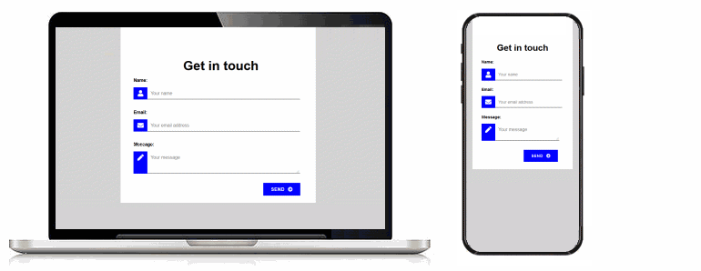
Create the project folder and sub-folders
Your first step is to create on your computer folders and sub-folders that will store the HTML file, CSS file and image files needed for this project. There are no JavaScript files required.
- If a folder named websites does not already exist on your computer, create it now.
- If the following sub-folders do not already exist inside the websites folder, create them now:
C:\websites\assets\css
C:\websites\assets\img

Download the HTML file
Follow these steps to download the HTML file to the websites folder.
- Go to the HTML file at this web address:
https://ibat-web-dev.github.io/contact.html
- Right-click anywhere on the page (except on an image) and choose View page source (Chrome or Mozilla Firefox).
- Right-click on the displayed text and choose Save as… (Chrome) or Save Page As… (Mozilla Firefox).
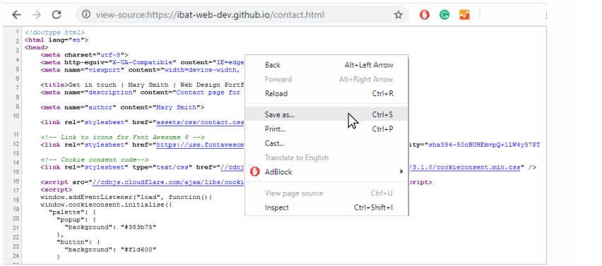
- In the File name: box, change the name of the file to contact.html.

- In the Save as type: dropdown list, change from the default value Webpage, Complete to Web Page, HTML Only.

- Save the file as contact.html file in your C:\websites folder.
Download the CSS file
You will now download the CSS file to the C:\websites\assets\css sub-folder.
- In your web browser, open the CSS file at this web address:
https://ibat-web-dev.github.io/assets/css/contact.css
- Right-click on the displayed CSS file and choose Save as… (Chrome) or Save Page As… (Mozilla Firefox).

- Save the contact.css file in your C:\websites\assets\css folder.
Download the three logo image files
You will now download the three logo image files to the C:\websites\assets\img sub-folder.
- In your web browser, display the following logo image:
https://ibat-web-dev.github.io/assets/img/logo-blue.png
- Right-click on the image and choose Save image as… (Chrome) or Save Image As… (Mozilla Firefox).
- Save the logo-blue.png file in your C:\websites\assets\img folder.
- Repeat the above steps for these two other image files:
https://ibat-web-dev.github.io/assets/img/logo-blue.png
https://ibat-web-dev.github.io/assets/img/logo-purple.png
You should now have the three images stored in the C:\websites\assets\img sub-folder.

About HTML forms and GitHub
What are called forms in HTML enable users to submit information to websites for processing. A typical example of a form is shown below.

It includes three entry areas or form fields into which a user can input information: Name, Email and Message. At the bottom of the form is a submit button named Send. When clicked or tapped, this button submits the information entered in the form fields to the website.
Your web hosting account on GitHub cannot run the type of server-side program that is needed to process information entered by users into HTML forms. As a result, you need to use an external online service to collect the information entered to a HTML form by users of your website.
Two such popular email-processing services that offer a free tier are the following:
In the next section you will review an example of using the free version of the Formspree service in a contact form on your website.
Customise the contact form
Follow these steps to customise the HTML form in the contact.html file you downloaded.
- In your text editor, open the contact.html file and scroll down to the line that begins with the opening <form...> tag. You can see that this line contains an email address.
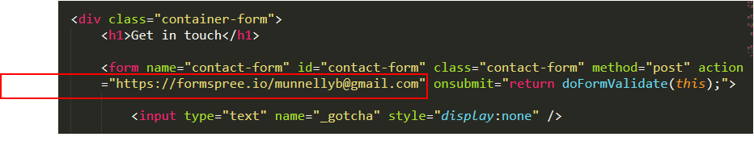
- Replace this email address with your own email address, and save the contact.html file.
Update the meta tags
In the <head> of your contact.html web page, within the <title>, <description> and <author> meta tags, you can see the name 'Mary Smith.'
Replace this with your own name, and save the contact.html file.
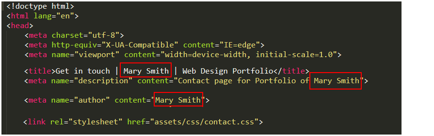
Review the Font Awesome 5 icon stylesheet
In the <head> of your contact.html web page, under the link to the contact.css stylesheet, is the link to another stylesheet: the CSS file for the Font Awesome icon collection. You need not make any changes to this.
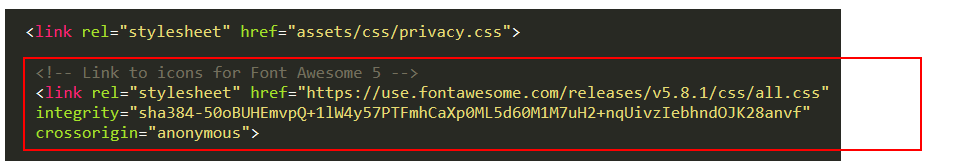
This CSS file is required to create the icons in the footer of the contact.html web page, and also in the contact form.
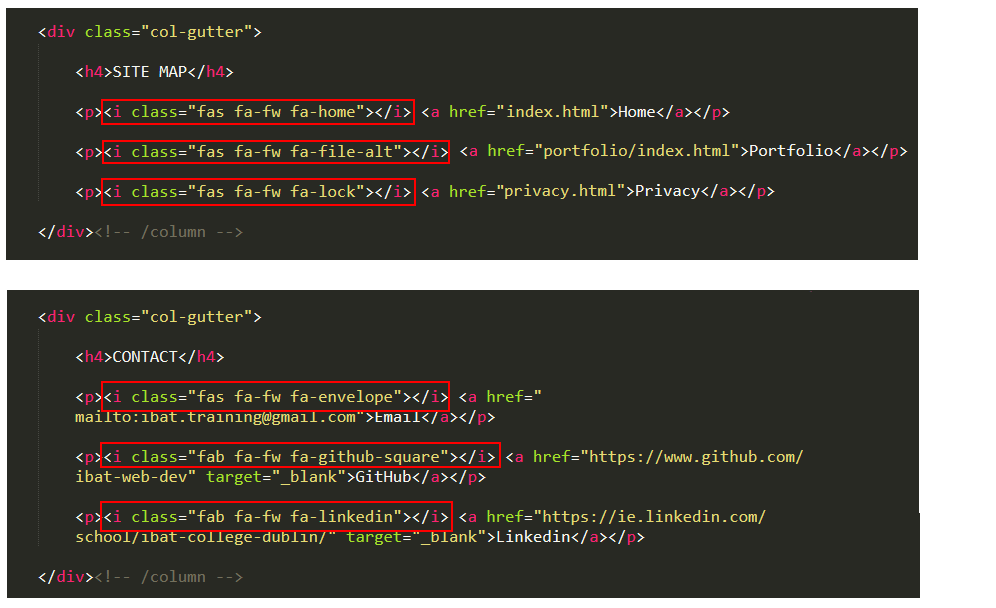
You can see a full list of Font Awesome icons at the web address below:
You can find some guidance on using Font Awesome icons below:
As with any Google Fonts you may use in your web pages, the Font Awesome icons will display on your computer only when you are connected to the Internet.
Update the Privacy pop-up message
In the <head> of your web page, under the link to the Font Awesome stylesheet, is the link to the stylesheet and the JavaScript code for the cookie privacy pop-up message.
<link="stylesheet" type="text/css" href=//cdnjs.cloudflare.com/ajax/libs/cookieconsent2/3.1.0/cookieconsent.min.css">
<script src="//cdnjs.cloudflare.com/ajax/libs/cookieconsent2/3.1.0/cookieconsent.min.js"></script>
<script>
window.addEventListener("load", function(){
window.cookieconsent.initialise({
"palette": {
"popup": {
"background": "#383b75"
},
"button": {
"background": "#f1d600"
}
},
"theme": "classic",
"content": {
"href": "https://ibat-web-dev.github.io/privacy.html"
}
})});
</script>
Change the web address near the bottom of the JavaScript code so that it links to the privacy.html file of your website.
Update the Google Analytics tracking code
Near the top of your HTML file, just before the closing </head> tag, paste in your website's unique tracking code from Google Analytics.

Each Google Tracking Code will have a unique ID in its first and last line. When finished, save the HTML file.
Validate your HTML file
To check your contact.html file is correct, use the official W3C Markup Validation Service. Follow these steps.
- Go to this web page: https://validator.w3.org.
- Click the Validate by Direct Input tab.

- Copy and paste your contact.html file into the box named Enter the Markup to validate.
- Click the Check button.
- If you see any errors, return to your contact.html file in Sublime Text, fix the errors, save the file, and copy the entire file again.
In the HTML Validator, click the Back button of your web browser to again display the Validate by Direct Input tab. Click once in the tab and paste in your corrected HTML file. Your new, pasted-in file will replace the earlier version. Finally, click the Check button.
Validate your CSS file
To check your contact.css file is correct, use the official W3C CSS Validation Service. Follow these steps.
- Go to this web page: https://jigsaw.w3.org/css-validator.
- Click the By direct input tab.

- Copy and paste your contact.css file into the box named Enter the CSS you would like validated.
- Click the Check button.
- If you see any errors, return to your contact.css file in Sublime Text, fix the errors, save the file, and copy the entire file again.
In the CSS Validator, click the Back button of your web browser to again display the By direct input tab. Click once in the tab and paste in your corrected CSS file. Your new, pasted-in file will replace the earlier version. Finally, click the Check button.
Note: The CSS Validator cannot process fluid typography styles. So ignore any messages such as those below.
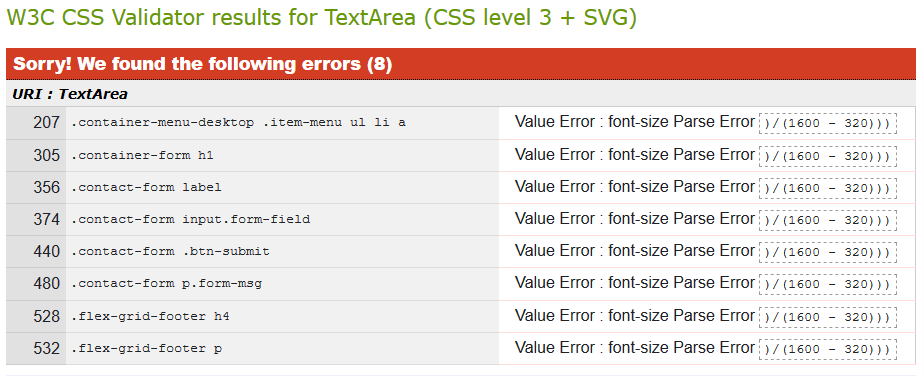
Upload your files to GitHub
Follow these steps to upload the files you have worked on to GitHub.
- Sign into your account at GitHub.com.

- On the left of your GitHub home page, click the name of your 'main' repository from the list displayed. This repository will have a name similar to the following:
ibat-web-dev/ibat-web-dev.github.io
marysmith/marysmith.github.io
joemurphy/joemurphy.github.io
green-pixels/green-pixels.github.io
abcdesign/abcdesign.github.io

- You are now shown the home screen of the 'main' repository of your GitHub account. Across the middle of the screen is a row of options like that shown below.
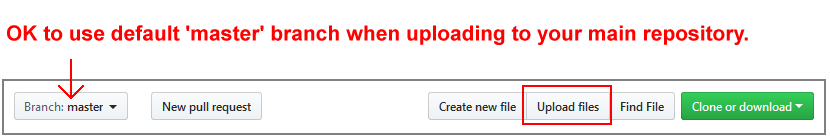
Because this is your 'main' repository, you do not need to use the dropdown list on the left to change from the 'master' to the 'gh-pages' branch.
- Now, upload the contact.html file along with the assets sub-folder to this 'main' repository of your GitHub account.
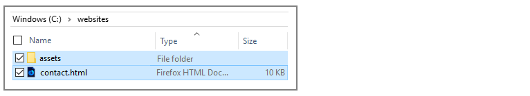
- After uploading the file and sub-folder, scroll down to the bottom of the screen, enter a short message in the Commit changes box and click the Commit changes button.
Your contact page is now published on GitHub at a web address similar to the following, where username is the username you have chosen for your GitHub account:
https://username.github.io/contact.html
It may take a few minutes for your uploaded files to appear on GitHub.
Activate your contact form
Your final step is to activate your Formspree-processed form. Here's how.
- Go to the contact page on your website. It will have a web address similar to the following, where username is the username you have chosen for your GitHub account:
https://username.github.io/contact.html
- Test your form by clicking (or, on a mobile phone, tapping) the Send button without entering any details in the form fields. You should see a series of error messages such as those below.
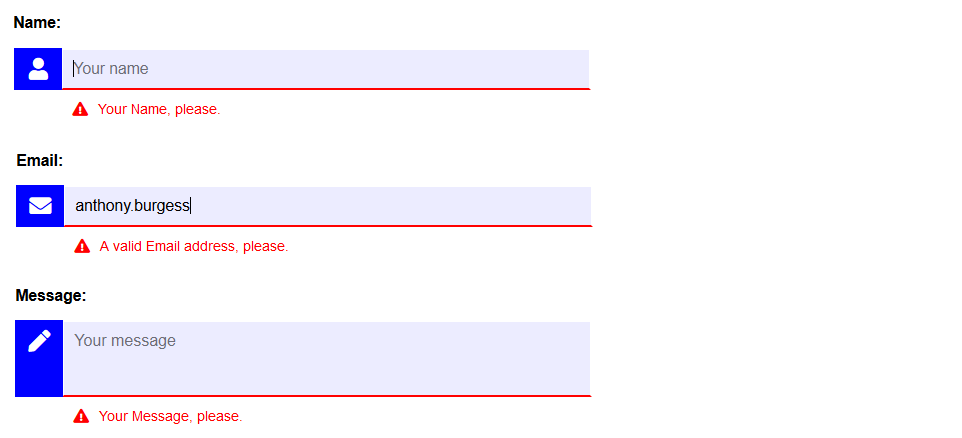
- Follow the instructions in the various error messages until clicking/tapping the Send button successfully submits the form.
- Your form is now passed to the Formspree service and you will be presented with an "I am not a robot" test. This is to protect your form against spam.
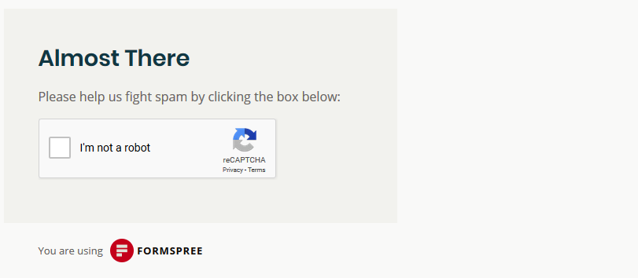
- After you have proved that you are not a robot, you are next shown a screen similar to the following.
 This message is only shown the first time a new form is submitted from a particular web address.
This message is only shown the first time a new form is submitted from a particular web address.
- The activation message is sent by Formspree to the email address you entered in the opening <form...> tag in the contact.html file.
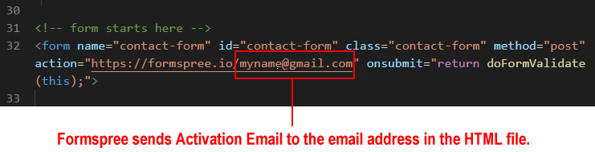
Go to your email account, open the email sent to you by Formspree, and click the Activate Form button.
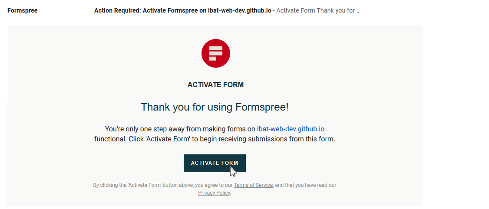
- You will next see a message telling you that your form is now active.

- In future, when a user enters their details to the contact form on your website, they will see the following confirmation message after they click/tap the Send button and pass the "I am not a robot" test.
 Formspree will immediately forward the submitted information to your email account. See the example below.
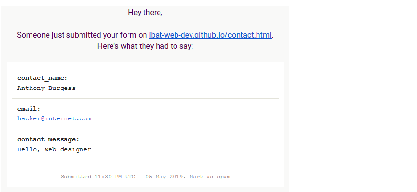
Formspree will immediately forward the submitted information to your email account. See the example below.
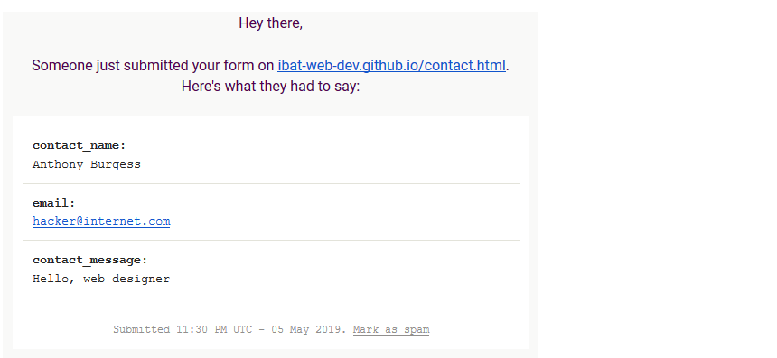
That's it. You now have a working contact form on your website.
Return to the Web Projects Main Page.